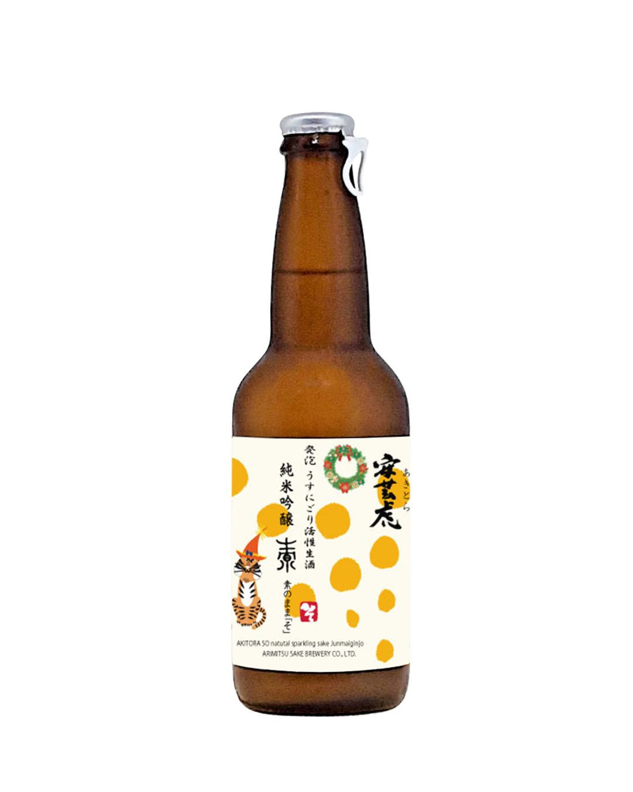
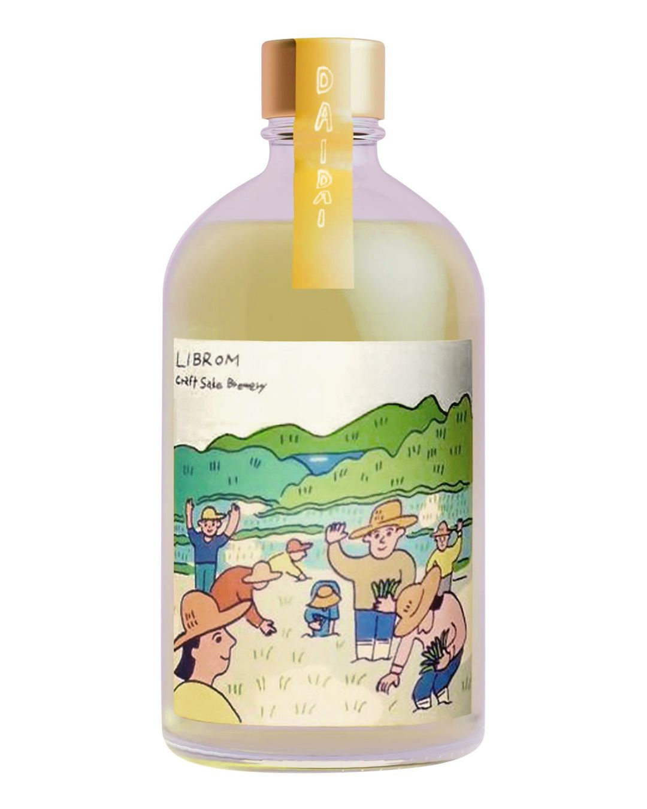
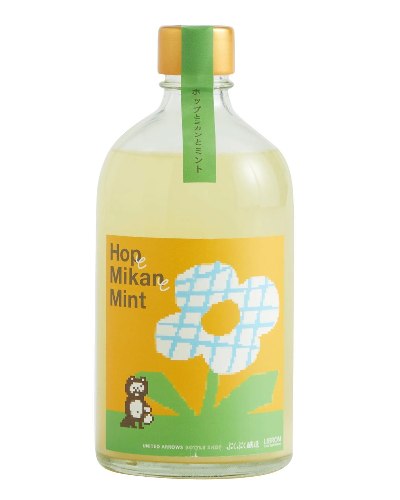

安藝虎 純米吟釀 素 發泡生酒330ml
NT720
酒精濃度：14%
- 初嚐有如氣泡白酒般地甘甜
- 中後段米的香甜味湧出
- 具有蜜蘋果、香瓜的及淡淡的乳酸香氣
初聞花果香氣奔放，中後段米的香甜味湧出，搭配氣泡感十分引人入勝；建議配置為取代原本洋食搭配的香檸類，將有意想不到的效果。
包裝上刻意用啤酒瓶，主要是出酒希望客人開瓶後一次飲用完畢，具有蜜蘋果、香瓜的及淡淡的乳酸香氣，氣泡感綿密，甜度十分明顯，初嚐有
如氣泡白酒般地甘甜，但其尾韻仍舊具有日本酒由米釀製出來特有的旨味，引人入勝。

鳳凰美田 赤判
NT2600
酒精濃度：16% 精米：40%
只有在冬季才能入手的珍稀限定品，純米大吟釀規格活性濁酒，氣泡較為綿柔，入口質地彷彿天鵝絨般絲滑，隨即
由杏桃、洋梨那充滿濃縮感的甘甜滋味接續而來，過喉展現悠長餘韻交織芳醇旨味，夢幻逸品絕不容錯過。

加茂錦 純米大吟釀 荷札酒
NT2600
酒精濃度：15%
這款是「荷札酒」系列的台灣限定品，帶有濃郁多汁的果味口感，酸度豐滿清新，以及未經過濾的自然味道。酒體含有些微碳酸氣泡

寫樂 愛山米
NT3000
酒精濃度：16%
稀有酒米愛山，香氣沉穩、有著果實般的甘甜，旨味、酸度交融，尾韻清爽

山形正宗 山川光男10週年貴釀酒
NT3000
酒精濃度：16%
稀有酒米愛山，香氣沉穩、有著果實般的甘甜，旨味、酸度交融，尾韻清爽山川光男在神輿上跳著山形縣極具代表性的「花笠
音頭舞」歡慶10歲生日！延續「祝！十週年」主題，集結四個酒造釀製的清酒特別推出限定貴釀酒版本，奢華甜潤感在口中綻放，餘韻繚繞不絕。邀請
大家和光男一同共襄盛舉，在熱鬧的生日慶典中舉起酒杯、跳舞狂歡。

寒菊銘釀 愛山
NT3600
酒精濃度：15%
日本sake time前10，像完熟的甜瓜一樣多汁、酒質細膩 口感絲滑潔淨。

產土 二農釀 山田錦
NT4800
酒精濃度：13%
日本sake time第8名。入口的氣泡感帶出華麗的如橘子汽水的高雅酸甜，滿溢的果汁感與酸度帶出淡淡的木質調香氣，
豐滿交織的滋味，收尾的透明感，豐富多層次的美好餘韻。採用「二農釀」，意指「菊池川流域＋生酛」

蓬萊泉 吟 純米大吟釀 山田錦
NT5800
酒精濃度：15%
日這款酒真的超細緻！冷飲時果香明顯，帶點蜜桃和哈密瓜的氣息，溫度稍高一點時，米的甜味和旨味會更突出。
尾韻柔和悠長，完全是值得細細品味的高級清酒！

鳳凰美田 純米大吟釀 金鳳凰 愛山
NT6600
酒精濃度：17%
嚴選100%極稀有酒米「愛山」釀造。酒瓶採用義大利製造香檳瓶，更顯矜貴。裝瓶後低溫熟成約一年時間，
色澤熠熠生輝，宛如金鳳凰飛舞一般。華麗果香與甜潤米香不斷繚繞舌尖，那股交纏卻在喉間稍縱即逝的酸度，猶如金鳳凰的成熟嫵媚曇花一現，餘韻無窮。

而今 愛山 火入 純米吟釀
NT7800
酒精濃度：16%
- 日本sake time第五名
- SAKETIME 排名僅次十四代的夢幻逸品
- 日本店頭抽籤才能買到的稀有酒款
純淨的花果香氣，全無雜質的乾淨口感，搭配屬於愛山特有多層次變化，充滿透明感的甘甜之味，是不容錯過的頂尖之作。

大嶺酒造 Ohmine 三粒米 山田錦
NT3000
酒精濃度：14.5%
- 滿滿的麝香葡萄香充盈在口中
- 酒體的甜味、酸味達到終極平衡
- 酒體很 juice、清爽，令人醉心在濃濃的秋意中
山田錦季節黑瓶版本，特色是帶有多汁的口感，如蘋果調性的香氣、麝香葡萄般的酸甜滋味，加上未經火入特有的新鮮層次，
黑瓶限量版的山田錦適合與刺身、壽司、白身魚等較為純粹的食材搭配，更顯其旨味芳醇。

三諸杉 純米吟釀 山田錦
NT00
酒精濃度：15%
- SAKE COMPETITION2018 純米吟醸部門 SILVER
- 仙台日本酒サミット2023 第一名
- SAKE COMPETITION2024 純米吟醸部門 SILVER
使用兵庫縣特A地區山田錦釀成的豐潤純米吟釀，甘甜可愛的香氣使人想起彈珠汽水；口感清冽輕盈，稍具稜角。
水潤飽滿的旨味與爽口的酸味相得益彰，冰飲或稍微回溫品飲各有趣味。

田光 純米酒
NT2200
酒精濃度：15%
田光系列中最經典的酒款，使用「佐瀨式」壓榨法，取得的酒質平衡柔美，依據季節狀況不同採用最合適的酒米釀造，
有著沉穩香氣，在口中感受豐盈米旨味的同時卻不覺得厚重，尾段的酸味點綴恰到好處，非常適合輕鬆搭餐。適飲溫度可漸漸拉回常溫，或是溫
燗飲用，搭配刺身、貝類、壽司、烤魚、醬煮魚、調味較清淡的肉類料理等。

山形正宗 稻造 純米吟釀
NT2200
酒精濃度：15%
香氣似未熟香蕉、覆盆子、芒果，洋溢青春活潑氣息，酒體帶新鮮的礦石感且富含米旨味，尾韻如山形正宗一貫風格，簡潔俐落。

加茂錦 黃水仙 純米大吟釀 荷札酒
NT2600
酒精濃度：13% 精米：50%
命名為黃水仙來形容整體的純淨感，入口甜味與酸度完美融合，清爽柔和的口感伴隨青蘋果香氣，近年來非常人氣的熱門品。

黑龍酒造 黑龍 垂れ口 純米吟釀
NT2600
酒精濃度：17%
黑龍的純米吟釀薄濁生原酒，使用福井縣產五百萬石米釀製，是黑龍每年 2、3 月限定販售的酒款。
可享受到鮮榨生原酒特有的新鮮水嫩的口感，一入口百分之百完全哈密瓜香氣，隨之而來的蘋果和白桃等甜美新鮮水果香非常怡人，
薄濁帶來更豐富口感與微量的碳酸感，入口柔順乾淨且不拖泥帶水是清新的作品。

寫樂 酒未來
NT3000
酒精濃度：16%
以山形縣銘柄「十四代」高木酒造耗費18年所開發的稀有酒米「酒未來」進行釀造，將上槽後的新鮮酒液直接進行一次
火入後，立即裝瓶並進行低溫儲藏，將酒質維持在最理想的狀態。完熟蜜瓜與香蕉的南國熱帶水果香氣撲鼻，入口時濃郁的果實香氣隨即佈滿口
中，經過一次火入後仍然保持相當新鮮的口感，清爽的米旨味舒適順口，水潤淡雅的甘甜十分細緻，酒體的平衡感搭配得非常得宜。非常推薦以
冰飲的狀態享用，作為餐搭用酒也相當合適，讓宮泉銘釀「寫樂 純米吟釀 酒未來」與您一起chill的度過這夏秋之際的美好時光

田中六五 6513 Sparkling
NT3000
酒精濃度：13% 精米：65%
Sparkling限定版，瓶內二次發酵賦予了綿密細緻的氣泡感，為炎熱天氣捎來一抹沁涼氣息，自然溫潤的米旨風味中帶上
些微辛口收斂感，暢快的表現適合充分冰鎮後飲用。

寫樂 兵庫山田錦
NT4800
酒精濃度：17% 精米：40%
宮泉銘釀所釀造的純米系列中最高等級酒款，將兵庫縣產優質山田錦精米步合至40%，
並採用「袋吊雫取」的汲取方式，完整保留住鮮美的酒質。優雅果實香氣綻放口中，酒質細膩、飽含米旨醇香，
多層次的口感富有穿透力，餘韻綿延不絕。最適合冰溫飲用，搭配刺身、壽司、白身魚、調味較清爽之海

信州龜齡 美山錦
NT6200
酒精濃度：15% 精米：39%
日本sake time第3名，帶著華麗吟釀香氣，口感細緻滑順，並帶有溫和米旨花香，是款平衡優雅 充滿透明感的高階作品。

磯自慢 大吟釀 愛山
NT6500
酒精濃度：16%
採用極其稀有的特A地區吉川產愛山酒米，特殊的義式渣釀白蘭地細長酒瓶，顯現器宇不凡。不似一般愛山
給人的華麗印象，香氣沉穩雅緻，風味濃郁深遠，膨潤的米旨甘甜在口腔中張力十足，後味少許苦韻婉轉，以乾脆爽利的結尾均衡整體口感。

宮泉 純米酒1.8L
NT4600
酒精濃度：16% 精米：60%
- 2019年 IWC 純米酒部門 Bronze
- 2018年 Sake Competition 純米酒部門 第1位
- 2017年 IWC 純米酒部門 Commended
本款「純米酒」，是屢次在國際比賽中獲獎的強牌中的強牌，連在福島縣內都要配量銷售。
果香與漂亮的酸味魅力十足，而收尾的爽利餘韻使人念念不忘、直想再斟上一杯。

鳳凰美田 荒押合併 純米大吟釀1.8L
NT6000
酒精濃度：16% 精米：40%
「荒押合併」顧名思義就是取上槽壓榨時的前後兩階段的珍貴酒液進行調和，而且並非每年定期生產的關係，
更顯其稀有及獨特性。精米步合僅40%的山田錦純米大吟釀更是讓人感受到鳳凰美田滿滿的心意。鳳凰美田特有華麗蜜瓜香氣撲鼻，保
留「荒走」的新鮮風味加上「押切」芳醇口感，入口層次感豐富，尾段微微的醇厚感，讓酒體更有深度。取前後兩個階段所調和出來
的酒，不僅能夠品嘗到最新鮮的風味，又能享受到芳醇的口感，讓兩階段的特色平衡發揮。也正因為是稀有的荒押合併，更值得你我細細去品味其中的奧妙。

兩關酒造 花邑 陸羽田 純米酒1.8L
NT6000
酒精濃度：16% 精米：55%
以極少見的米種「陸羽田」來釀製，有著平衡的酸甜度，亦帶有柔和香氣及清新口感，雖然是純米酒但在
酒造的技術展現之下豐富的香氣滋味與平衡感不輸純米大吟釀。

田中六五 純米酒 山田錦
NT00
酒精濃度：13% 精米：65%
最初創造田中六五之際便堅持用精米步合65%的糸島山田錦釀造純米酒一決勝負，希望直接表達出最質樸的味道，並且是任何人都可以在平時輕鬆飲用的酒款。
彷彿剛炊好的淡雅米香撲鼻而來，令人聯想如咀嚼米飯般光滑又飽滿的口感，酸味亦恰到好處，不像主角般搶眼，卻是餐桌上不可或缺的存在，實為一款百
搭的食中酒。充滿獨特魅力更被豪華臥鋪列車「九州七星號」選為車內用酒。

風之森 笑門福來
NT2400
酒精濃度：17% 精米：65%
海外限定版1200瓶。風之森已超硬水聞名，有著豐富的礦物感。酒體帶著活潑微氣泡與立體的口感。具有生酒討喜的乳酸滋味與青草氣息。

加茂錦 月白 純米大吟釀
NT2600
酒精濃度：15%
將把山田錦拋光至40%，充滿舒服地吟釀香淡淡花香，甜酸感平衡的很好，入口微辛口帶有淡淡米香，充滿清澈的透明感，讓人
覺得高雅的珍品，能感受到清爽的吟香，與簡約色彩和酒的深度，餘韻略短是充滿加茂錦色彩的淡麗辛口風味，命名為「月白 」
如月光般帶有淡藍色色調的白，用以展現此酒的個性。

一水白城 純米大吟釀
NT2800
酒精濃度：16% 精米：45%
魅惑的新鮮芒果香氣，入口時能夠感受到成熟果實的酸甜味，漸漸而來的是米旨味與香氣。尾韻帶著清爽的辛口感，是一款優雅且整體感均衡的酒。

田中六五 泡田中
NT2800
酒精濃度：14% 精米：65%
以生酛65為基礎進行二次發酵的氣泡清酒，「泡田中」呈現細膩且清爽的滋味、氣泡感充沛，在層次豐富的酒體中不但能感受到米旨甘甜，同時伴
隨適度苦味及收斂感讓口感更加平衡。推薦使用小型Chardonnay酒杯或口徑較寬的酒器品飲，能夠更好地展現細緻風味層次。

寫樂 羽州譽
NT3000
酒精濃度：16% 精米：50%
羽州譽是由十四代的高木酒造社長耗費18年歲月，將美山錦(母系)和玉龍F10(父系)交配所培育而成的極稀有酒米，其釀成的酒質具備俐落
口感。羽州譽與龍之落子、酒未來並列為山形縣的稀有品種，能夠使用的酒造也十分有限。
歷經一個夏季的潤飾，消除了苦澀感，形成圓滑的酒質，香氣雖內斂，入口後卻充滿潤澤果香、酸甜度適中，尾韻微辛口，適合以冷飲
狀態搭配刺身、壽司、天婦羅等料理佐餐。

飛露喜 純米吟釀 山田錦
NT3000
酒精濃度：16%
點滴甘醇隱藏在低調奢華的酒標中，飄散著似柑橘、瓜果系沉穩清香，口感輕盈細膩，如絲線般流暢地滑過舌面，綿密旨味回甘從
喉間蜂擁而上，與酸香交織出完美平衡，令人心曠神怡，一氣呵成。

醴泉 蘭奢待大吟醸
NT4800
酒精濃度：16% 精米：55%
全程手工小量製作、經冷藏5度低溫熟成六個月後出品，口味鮮明、香氣高雅穩重帶有多汁哈密瓜風味為其特徵，尾韻有著舒適的收
斂感，味覺起伏跌宕有致，是醴泉所追求的脫俗酒質，不一味倚賴酵母帶來強烈華麗的高調香氣，而是沉穩有層次的香味，能品嚐到辛口酒的爽利洗鍊。

飛露喜 特別純米1.8L
NT5200
酒精濃度：16%
飛露喜系列中最廣為饕客們所津津樂道的便是這款特別純米，榨酒後完成一次火入進行儲藏，並生詰裝瓶，因此擁有生酒般的新鮮感及圓
潤具有深度的風味，香氣沉穩優雅，入口觸感柔軟卻也同時感受到豐潤飽滿的米旨味及迷人酸度，暢快好入喉，餘韻略帶些許果皮般的苦味。
和調味簡單的日式和食搭配絕佳，例如山菜天婦羅、白身魚刺身、鹽燒肉類等料理。
《2024 Sake Competition 純米酒部門 金賞 第4名》
《2023 IWC 純米酒部門 金賞》
《2012~2019 Sake Competition 純米酒部門 金賞》

田中六五 6513
NT3000
酒精濃度：13% 精米：65%
瀰漫著自然沉穩果香，入口時可感受到柔軟清透的酒質，交織宜人的清爽酸味，雖為低酒精度卻絕不單薄，絲滑入喉後口腔中充滿紮
實米旨風味，回韻帶有一絲微苦及辛口調性，彷彿吸入糸島的清新空氣般令人感到心曠神怡，簡約的口感適合搭配如壽司、豆腐泥涼
拌蔬菜等調味較清淡的料理。

代代橙500ml
NT1800
酒精濃度：11% 精米：92%
串起地區自然、人、作物的特別企劃，與當地居民攜手在糸島的梯田親手種植酒米，並採集同區栽培的代代橙加入釀造，且酒標是
由插畫家「伊達雄一」所繪製的田園光景。瀰漫柑橘調活潑酸香，入口滿溢水潤果汁感，隱約帶有米旨清甜，新鮮氣泡增添舒暢口
感，彷彿從糸島的土地獲得滿滿自然活力，非常適合在天氣漸熱時節享用。

啤酒花蜜柑薄荷500ml
NT2200
酒精濃度：9% 精米：92%
由「LIBROM」x「PUKU PUKU釀造」x「UNITED ARROWS」共同企劃推出，在釀造時加入PUKU PUKU釀造擅長的啤酒花、福岡產薄荷和蜜柑
等副材料，瀰漫柑橘、花香、草本調芳香，活潑的氣泡交織清涼感增添了清爽度，隨後能感受到一絲啤酒花與柑橘皮由來的苦味，
彷彿精釀啤酒與日本酒的綜合體，顛覆傳統釀造方式的表現十分新奇！